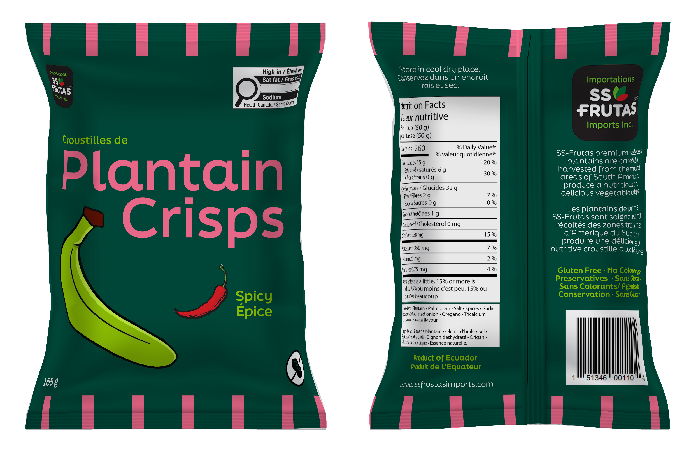
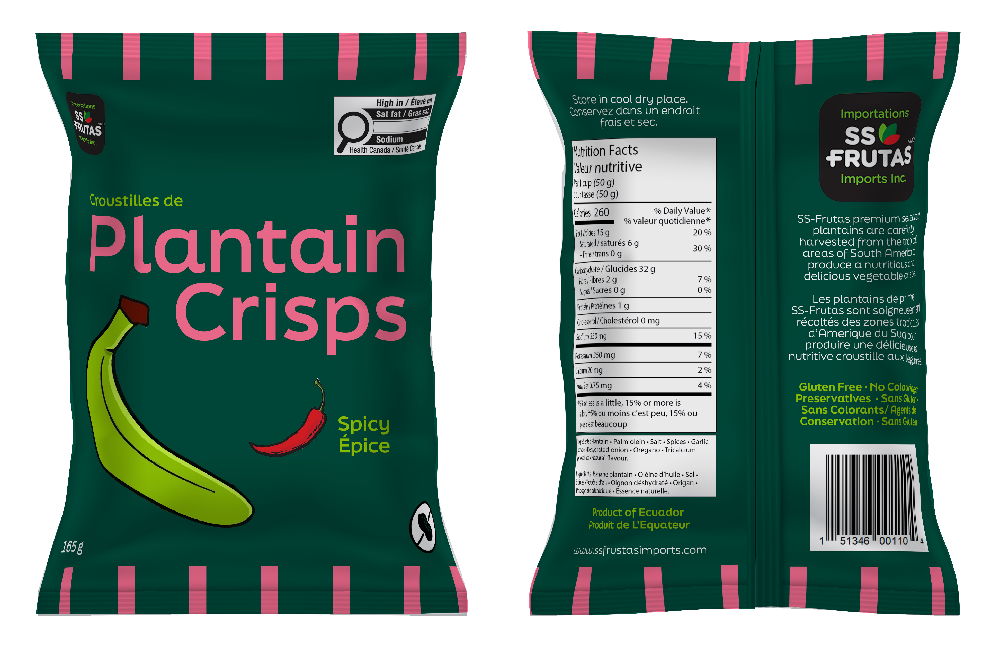
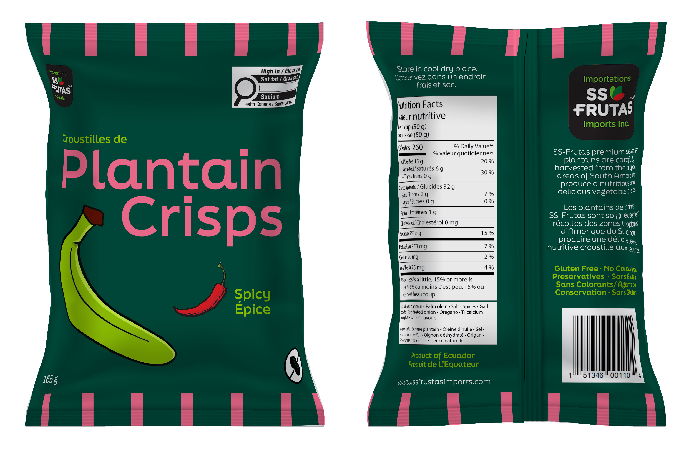

Here I was tasked with identifying and redesigning a food or beverage package found in Ontario retail stores. After conducting in-store research, I selected a product whose packaging lacked strong visual hierarchy, failed to clearly communicate brand positioning, and didn’t effectively appeal to its target audience. We analyzed the existing package's strengths and weaknesses, assessed competitor designs, and researched the category’s shelf dynamics. Based on my findings, I developed a redesigned packaging concept for thier three flavours, extending the design system across those three varieties to ensure cohesive differentiation. My redesign addressed regulatory requirements, bilingual labeling, and improved appetite appeal while refining visual hierarchy and sustainability. This project pushed me to balance creative design with strategic, real-world packaging considerations.

Brand Position
In our research the first target audience for these chips are South American/Caribbean immigrants as they would be
the most familiar with the chips. Over time a wider appeal has been driven for a demand for healthy, natural snack alternatives and
a growing interest in exotic flavours. Plantain chips have become part of the broader trend towards organic and clean-label
foods. As said in their website, SS Frutas advertises their own snack as Potassium-rich, Glutenfree, No coloring agents,
artificial flavourings or preservatives, and Nut-free. We aim to revised their target audience with design to appeal towards
adults looking for a healthier option to their regular potato chips and parents looking for a healthy snack for their child.
Retail Category Overview
We found the chips separate from the regular potato/health chip aisle, by the dried fruit strips and
prepackaged fruit cups in Metro (425 Bloor St W, Toronto, ON M5S 1X6). Typically cheaper than regular chips and fresh fruit options
at $3.49. Sometimes displayed on racks, using the punctured hole at the top of bag, but this time they were placed within their
proper box on a wired shelf.
Typeface
When choosing a typeface, my goal was to make the design cleaner and more legible rather than giving it a junk food look,
as I was aiming for a healthier option compared to other family chip brands. However, while focusing on cleanliness, we still
wanted to use a serif typeface to maintain some consistency with the original design and avoid alienating existing customers. We
found that FinalSix was one of the cleanest typefaces available on Adobe Fonts, so we explored our designs primarily with FinalSix,
experimenting with multiple weights.
Overall
The new packaging design is cleaner, more modern, and easier to read, making it more appealing to families. It uses a
simplified color palette, minimal illustration, and clear hierarchy to emphasize key information like the product name, flavor,
and health benefits. In contrast, the older packaging (right) is cluttered with busy graphics, bold outlines, and inconsistent
typography, which can feel overwhelming and dated. The new design feels trustworthy and family-friendly, while the old one feels
more chaotic and less refined.